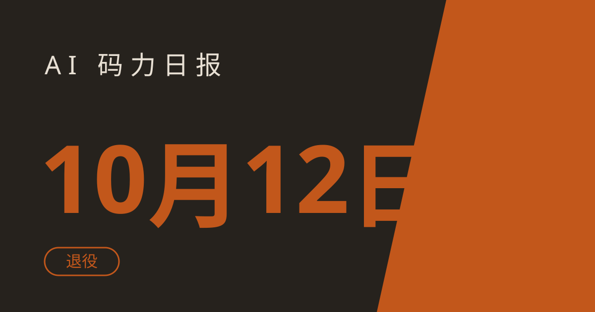

AI 码力日报 · 2026年10月12日

⚡ 一句话速览
- OpenAI 定在 10 月 14 日把 GPT-5.5 从 ChatGPT、ChatGPT Work 和 Codex 里退役，API key 调用不受影响；凡是把模型名写死在配置、脚本和定时任务里的，今天就该动手改。原文
- Anthropic 这周给 Claude Max 和 Team 计划加了每月 API credits：Max 5x 每月 $100、Max 20x 每月 $200，Team 拼池最高 $500，不领就作废，未用完月底清零。原文
- Google 的 Gemini CLI 更新到 v0.63.0，一口气 15 个修复，最实用的一个是修掉了看 diff 时报
cannot spawn : No such file or directory的老毛病。原文 - GitHub 上 hugohe3/ppt-master 还在涨：丢一篇文档进去，出来的是能改的原生 PowerPoint，不是截图拼的假 PPT。原文
🤖 今日 AI Coding 动态
OpenAI：GPT-5.5 后天退役，Codex 默认模型已经换人
先说退役。GPT-5.5 10 月 14 日起从 ChatGPT、ChatGPT Work、Codex 三个入口下线，全计划生效；普通聊天会自动切到新默认，真正要操心的是把模型名写进工作区默认、自定义 agent、定时任务和脚本的人，官方指引是切到 GPT-5.6 Sol。用 API key 的调用不在这次退役范围内，不用慌。再说 Codex 本体：CLI 0.161 把 GPT-6.1 Sol 设为内置目录和 Bedrock 目录的默认模型，0.162 加了受管 Git worktree 工具、Command Center 任务置顶，顺手修了 Linux 沙箱和 apply_patch 的换行符保留。我自己的习惯是升级前先把 config 里的钉版清一遍，省得新旧默认打架。退役原文｜Codex 版本解析
Anthropic：Claude Code 2.1.296 先把权限的洞补上
Claude Code 这周连发 2.1.295 / 2.1.296，重点不在新功能，在安全边界：hooks 从 2.1.295 起可以加 onFailure: "block"，守卫脚本自己挂了就直接拦下动作，不再默认放行；2.1.296 又让 Read 工具能一次性读大文件，并修了日志脱敏的细节。同一周 Anthropic 还发了小模型 Claude Haiku 5.5（1M 上下文、128k 最大输出），并把 Sonnet 5.5 的 prompt cache 读取价从 $0.20 砍到 $0.10/百万 tokens。我建议在用 hooks 当门禁的人今天就升级，顺手把教程里那类配置补上。版本对比原文｜平台更新原文
Google：Gemini CLI v0.63.0，15 个修复没新功能，但个个踩在痛点上
v0.63.0 是 10 月 6 日发的稳定版，这几天讨论才跟上。除了上面说的 diff 报错，它还修了：负数截断阈值本该关截断却把输出翻倍的问题、无头环境下认证无限循环、长跑 agent loop 的内存膨胀；同时非交互模式下也能跑自主 plan 执行了。对我这种把 CLI 挂在脚本里跑的人，这版的价值全在“别半夜挂掉”。升级就一行：npm install -g @google/gemini-cli。原文
🐑 今日羊毛
Anthropic 月度 API credits：Max 每月 $100 起，不领作废
一句话：10 月 7 日起随 Haiku 5.5 一起上线的福利——Max 5x 每月 $100、Max 20x 每月 $200 的 Claude API credits，Team 按席位拼池（Standard $20/席、Premium $100/席）最高 $500，约省 ¥700 起。
- 怎么薅：打开 claude.ai 的 Settings → Billing，在 API credits 区块点 Link organization，关联或新建一个 Claude Console 组织，额度随账期到账；账号需已在 Max/Team 满 7 天，不用绑卡。直达链接
- 有效期：每月随账期发放，未用完月底清零、不结转（截至撰写时），过期不候
- 适合谁：已经在付 Max/Team、又想拿 API 跑自己小项目的人。注意：这笔额度不能抵 Claude Code 的交互会话，只覆盖 API、Playground、Managed Agents 和 Agent SDK
Google 学生羊毛：AI Pro 免费一年，12 月 31 日前领
一句话：符合条件的美国高校学生可领 12 个月 Google AI Pro 免费（原价 $19.99/月，约省 $240）；美国以外 140 多个市场的学生领的是 AI Plus 免费一年。
- 怎么薅：到 Google 学生优惠页，用学校邮箱走 SheerID 在校验证，18 岁以上、需预留支付方式；2025 年那批试用过期的学生这次也能重新领。直达链接
- 有效期：领到 2026 年 12 月 31 日截止（截至撰写时），免费期结束自动按原价续费，不用记得提前取消
- 适合谁：有海外在读身份的读者；国内在读的同学这条暂时够不着，别去买号，风险大于收益
免费 LLM API 组合拳：Groq + OpenRouter 先把原型跑起来
一句话：不想付费先跑原型，可以把几家的免费层叠着用——Groq 上一批开源模型有每日免费额度，OpenRouter 的免费模型每天 50 次请求，往账户里充过 $10 credits 后免费额度提到每天 1000 次。
- 怎么薅：分别注册 Groq 和 OpenRouter 拿 key，两家都是 OpenAI SDK 兼容接口，换个 base_url 就能切；原型期用免费层轮换，跑通了再决定给哪家付钱。直达链接
- 有效期：免费层长期存在但限额随时会调（截至撰写时），过期不候
- 适合谁：做 side project、练 agent 原型的开发者；提醒一句，免费层的 prompt 可能被服务方留存，别往里塞敏感数据
⭐ 今日 GitHub 热门项目
hugohe3/ppt-master：文档进去，原生 PPT 出来
一句话介绍：把文档或一个主题变成真正能改的 PowerPoint——原生形状、转场和动画、按数据生成的图表表格，还能用旁白备注生成配音，支持套自己的 .pptx 模板。解决什么问题：以前 AI 做 PPT 给的是一张张图，这个给的是能在 PowerPoint 里继续改的文件。⭐ 约 5.9 万（截至撰写时，据 gittrend 10 月 10 日数据）。适合：天天做汇报、方案和课件的人。项目地址
microsoft/AesCode：一句话生成能改的 HTML 页面
一句话介绍：微软这两天放出的开源模型 AesCode-32B / 8B（Apache 2.0，基于 Qwen3-VL 微调），给它一段需求加一张参考图，吐出一整份可编辑的 HTML——幻灯片、海报、仪表盘都行，图表走 ECharts，生成完还能直接改代码。解决什么问题：一次性图生页面大多只能看，这个的产物是能交付、能二次编辑的代码。⭐ 新仓库刚放出，星标还在起步（截至撰写时）。适合：做落地页、内部仪表盘、快速原型的前端同学。项目地址
yetone/magpie：在菜单栏里给每个 agent 换模型
一句话介绍：一个模型启动器——让 Codex 跑在 DeepSeek 上、Claude Code 跑在 Kimi 上，从菜单栏一处切换，不用每个工具单独改配置。解决什么问题：多 agent 并行用的人，模型和账单散在各处，这个把入口收拢了。⭐ 约 9000（截至撰写时，据 gittrend 10 月 10 日数据）。适合：同时用两三个 coding agent、想压 API 成本的人。项目地址
cloudflare/security-audit-skill：给 agent 装一套多阶段安全审计
一句话介绍：Cloudflare 出的 coding agent skill，把安全审计拆成多个阶段跑，每条发现都要求独立验证并输出机器可读的结果。解决什么问题：让 agent“顺手查下安全”通常只会给一堆吓人但没法落地的清单，这个至少把发现做成了能进流水线的格式。⭐ 约 2.8 万（截至撰写时，据 gittrend 10 月 10 日数据）。适合：上线前想让 agent 先过一遍代码的团队。项目地址
🛠️ 值得一试的工具：Tabstack
是什么：Mozilla 做的 Web 执行与数据抽取 API——给它一个 URL 和你想要的结构，它返回结构化数据、带引用的答案，或者替你把浏览器任务跑完，省掉自建爬虫和浏览器农场。解决什么痛点：agent 要读网页时，正文抽取、JS 渲染这些脏活不用自己扛。免费额度：新账号送 10,000 credits，不用绑卡。
verdict：值得试——额度够把 Extract / Research 几条链路完整验一遍再决定付不付费；唯一提醒，它抽出来的正文是 JSON 包着的 Markdown，自己看不舒服，是给程序和 agent 用的，不是给人读的。原文
🎓 3 分钟小教程：赶在 10 月 14 日前，把 Codex 里的 GPT-5.5 钉版清掉
前置条件：本机装了 Codex（CLI 或桌面端），且你曾经在配置、脚本或定时任务里写过模型名。
- 先全盘搜一遍钉版在哪：
bash
grep -rni "gpt-5.5" ~/.codex/ .codex/ ~/scripts/ 2>/dev/null
- 把搜到的模型钉版配置改掉：要么直接删掉这一行吃新默认，要么换成你账号里可用的新模型（官方退役指引指向 GPT-5.6 Sol；CLI 0.161 起内置默认是 GPT-6.1 Sol，以你账号实际可选为准）。顺手确认 CLI 版本在 0.162 或更新：
bash
codex --version
- 随便开一个小仓库跑一轮冒烟：让它读一个文件、改一行、跑一次测试，三步都通就说明切换干净了。
预期效果：14 号退役当天不会出现“任务跑一半模型没了”；自定义 agent 和定时任务也一起过关，不用半夜爬起来救火。
数据截至撰写时，仅供参考。